Aragorn is a fictional character and a main protagonist in J. R. R.
Tolkien's The Lord of the Rings. Aragorn was a Ranger of the North, first introduced with the
name Strider and later revealed to be the heir of Isildur, King of Arnor and Gondor.
Frodo Baggins is a fictional character in J. R. R. Tolkien's
writings, and one of the protagonists in The Lord of the Rings.
meer info
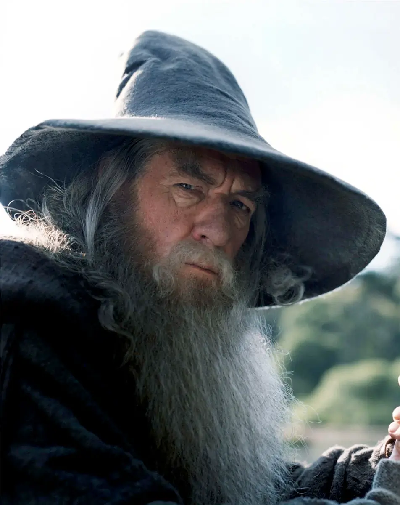
Gandalf
Gandalf is a protagonist in J. R. R. Tolkien's novels The Hobbit and
The Lord of the Rings. He is a wizard, one of the Istari order, and the leader and mentor of
the Fellowship of the Ring. Tolkien took the name "Gandalf" from the Old Norse "Catalogue of
Dwarves" in the Völuspá.
meer info
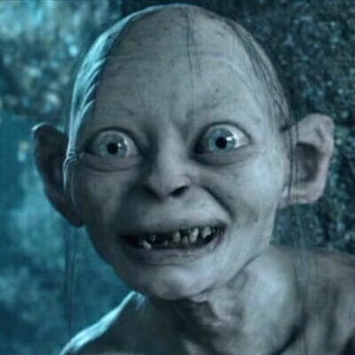
Smeagol
Smeagol is a fictional monstrous character from J. R. R. Tolkien's Middle-earth
legendarium. He was introduced in the 1937 fantasy novel The Hobbit, and became important in
its sequel, The Lord of the Rings. Gollum was a Stoor Hobbit of the River-folk who lived near
the Gladden Fields.
meer info
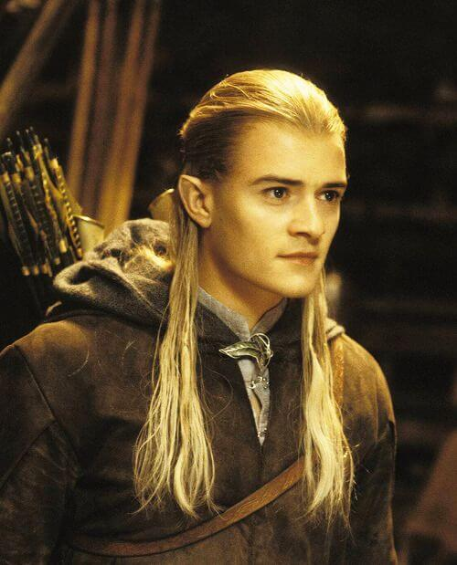
Legolas
Legolas is a fictional character in J. R. R. Tolkien's The Lord of the
Rings. He is a Sindar Elf of the Woodland Realm and one of the nine members of the Fellowship
who set out to destroy the One Ring. He and the Dwarf Gimli are close friends.
meer info
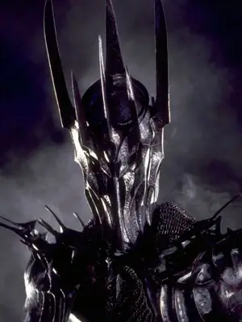
Sauron
Sauron is the title character and the primary antagonist, through
the forging of the One Ring, of J. R. R. Tolkien's The Lord of the Rings, where he rules
the land of Mordor and has the ambition of ruling the whole of Middle-earth.
meer info
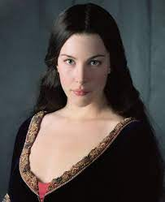
Arwen
Arwen Undómiel is a fictional character in J. R. R. Tolkien's
Middle-earth legendarium. She appears in the novel The Lord of the Rings.
meer info
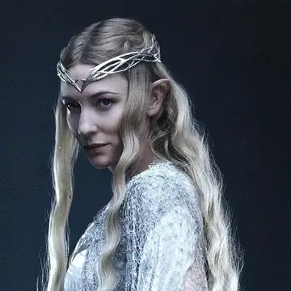
Galadriel
Galadriel is a character created by J. R. R. Tolkien in his
Middle-earth legendarium. She appears in The Lord of the Rings, The Silmarillion,
and Unfinished Tales. She was a royal Elf of both the Noldor and the Teleri, being a
grandchild of both King Finwë and King Olwë.
meer info
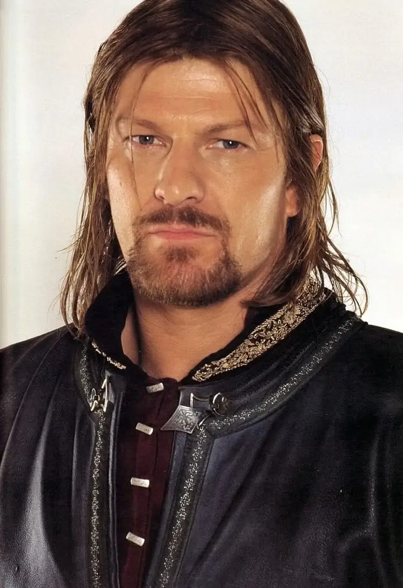
Boromir
Boromir is a fictional character in J. R. R. Tolkien's legendarium.
He appears in the first two volumes of The Lord of the Rings, and is mentioned in the last
volume, The Return of the King. He was the heir of Denethor II and the elder brother of Faramir.
meer info
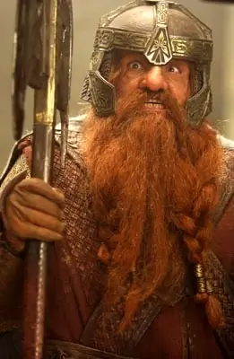
Gimli
Gimli is a fictional character in J. R. R. Tolkien's Middle-earth,
appearing in The Lord of the Rings. A dwarf warrior, he is the son of Glóin, a member of
Thorin's company in Tolkien's earlier book The Hobbit. Gimli is chosen to represent the race
of Dwarves as part of the Fellowship of the Ring.
meer info
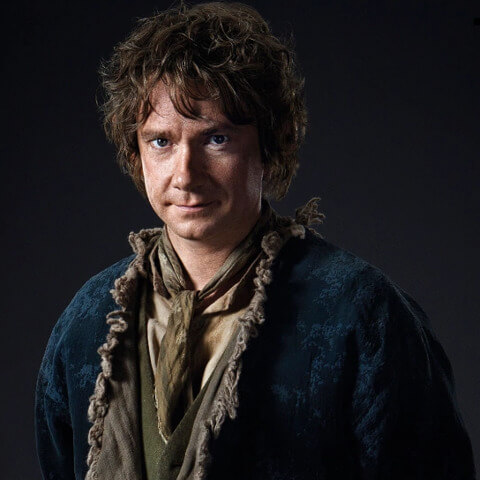
Bilbo Baggins
Bilbo Baggins is the title character and protagonist of J. R. R.
Tolkien's 1937 novel The Hobbit, a supporting character in The Lord of the Rings, and the
fictional narrator of many of Tolkien's Middle-earth writings.
meer info
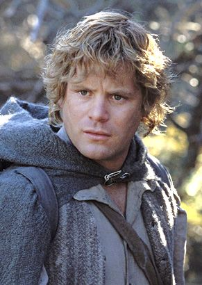
Samwise Gamgee
Samwise Gamgee is a fictional character in J. R. R. Tolkien's
Middle-earth. A hobbit, Samwise is the chief supporting character of The Lord of the Rings,
serving as the sidekick of the protagonist Frodo Baggins.
meer info
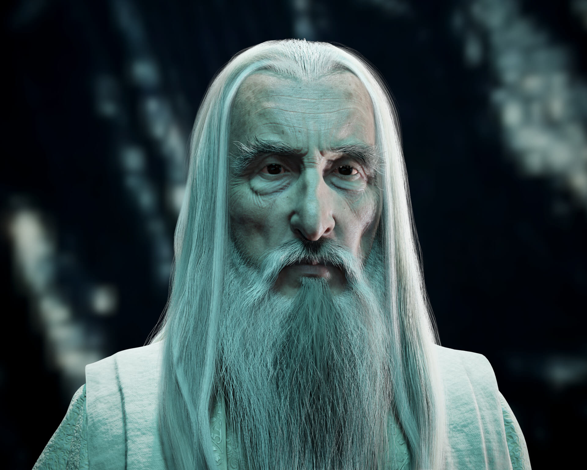
Saruman
Saruman (Quenya), also known as Saruman the White, was first of
the order of Istari (Wizards), who came to Middle-earth as emissaries of the Valar in
the Third Age. He was the Wizards' leader, and chief of the White Council that opposed Sauron.
meer info
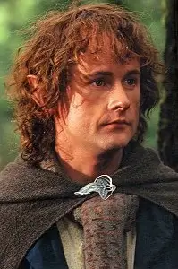
Pippin Took
Peregrin Took, commonly known simply as Pippin, is a fictional
character from J. R. R. Tolkien's fantasy novel The Lord of the Rings. He is closely tied
with his friend and cousin, Merry Brandybuck, and the two are together during most of the story.
meer info
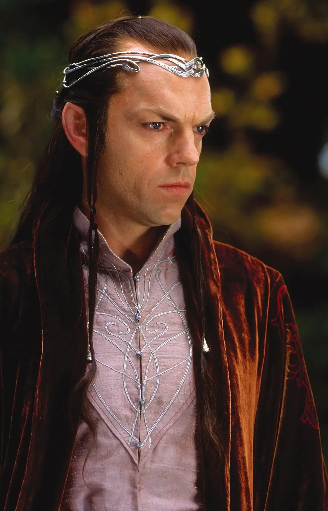
Elrond
Elrond Half-elven is a fictional character in J. R. R. Tolkien's
Middle-earth legendarium. Both of his parents, Eärendil and Elwing, were half-elven, having
both Men and Elves as ancestors.
meer info